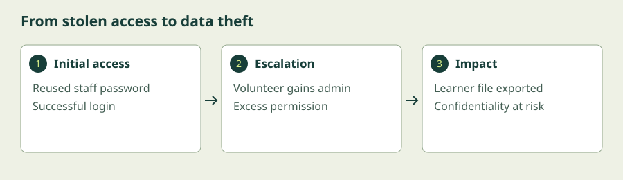

Motivation
Why would someone attack a community learning centre? Follow the incentives, identify what matters, and learn to recognise an incident before it becomes a crisis.
Begin the lesson ↓By the end, you can…
- Explain financial, political, personal, and curiosity-driven attacker motivations.
- Distinguish confidentiality, integrity, availability, authentication, and accountability.
- Trace an attacker’s lifecycle and connect common attacks to defensive controls.
- Use major breach lessons to identify practical improvements.
Think like an attacker. Decide what to defend.
1. Security starts with people and purpose
Information security protects information and the systems that handle it. Cybersecurity focuses on digital systems; information security also includes a printed attendance list left on a desk. Neither means removing every risk. We protect what matters, in proportion to the harm a failure could cause.
Imagine a community learning centre that offers evening classes. It holds learner contact details, attendance records, and payment information. These are assets: things with value. A criminal wanting to steal them is a threat actor. A reused staff password is a vulnerability: a weakness. Requiring a second login factor is a control: a measure that reduces risk. Risk combines how likely a harmful event is with its consequences.
Attackers have different incentives. Criminals may seek money through fraud, stolen data, or ransomware. State-linked actors may seek intelligence or disruption. Ideological groups may seek publicity. An unhappy insider may seek revenge, while a curious person may want to prove skill. An insider can also cause harm accidentally. These motives can overlap; a log entry alone rarely proves who acted or why.
Defenders want the centre to keep teaching, protect learners, meet obligations, and maintain trust. They have limited time and money. The question is: which control most reduces the harm that matters to this organisation?
2. What are we protecting?
| Goal | Plain meaning | At the centre |
|---|---|---|
| Confidentiality | Only authorised people can see information. | Keep learner contact details private. |
| Integrity | Information stays accurate; unauthorised changes are prevented or detected. | Stop someone changing a refund amount. |
| Availability | People can use a service when needed. | Keep class registration usable during enrolment. |
| Authentication | Establish who or what is making a request. | Check a staff member’s identity at login. |
| Accountability | Make actions traceable to responsible identities. | Record who exported learner records. |
The first three goals form the CIA triad. A ransomware incident can affect all three: files become unavailable, records may change, and copies may be stolen. Authentication differs from authorisation: proving that you are a volunteer does not give you permission to view payroll.
3. An attack is a chain of opportunities
A useful simplified lifecycle is reconnaissance → initial access → execution → persistence and privilege escalation → lateral movement → impact. Reconnaissance gathers information. Initial access opens a door. Execution runs attacker-controlled activity. Persistence helps the attacker return; privilege escalation gains stronger permissions. Lateral movement reaches other systems. Impact may mean stealing information, changing records, or disrupting service. Real attacks may skip stages, repeat them, or take a different order.
A phishing email can trick a staff member into revealing a password. Credential stuffing tries passwords exposed elsewhere. Exploiting unpatched software uses a known weakness. Malware is software intended to cause harm. Social engineering manipulates people rather than breaking cryptographic mathematics. A denial-of-service attack overwhelms a service. None requires the attacker to be a cinematic genius: ordinary weaknesses often combine.
Map controls to the chain: updates close known vulnerabilities; phishing-resistant multi-factor authentication makes stolen passwords less useful; limited permissions reduce escalation; segmentation restricts movement; monitoring detects unusual activity; tested backups help recovery. No single control solves the whole chain.
4. Learn from large breaches
In the 2017 Equifax breach, the US Federal Trade Commission alleged that a known Apache Struts vulnerability went unpatched and that organisational failures contributed to the exposure. The lesson is to give each system an owner and verify fixes, rather than treating a patch announcement as proof of completion. Read the FTC’s case analysis.
Ransomware incidents illustrate a different operational lesson: recovery needs preparation. Keep backups separated from everyday account access, test restoration, and plan who will coordinate response. CISA’s ransomware guide connects prevention with response and recovery. A backup can restore files, but it cannot undo disclosure of a stolen copy.
A staff member can sign in but cannot open the learner directory. Which goal failed? It may be availability for that staff member, or an intended authorisation restriction. Security analysis starts by establishing what should happen.
Second case: WannaCry (2017). This global ransomware campaign spread through vulnerable Windows systems using weaknesses in the Server Message Block (SMB) service. It demonstrates how an exposed, unpatched service can turn one compromise into widespread disruption. Contrast it with Equifax: protecting confidentiality and maintaining availability can call for overlapping controls, including verified patching and segmentation. The NCCIC 2017 review documents the campaign.
Another way into the ideas
Choose the written lesson or combine these visual explanations with the guided exercise. The videos cover selected concepts; use the short written explanations to fill the remaining objectives.
What is the CIA Triad
IBM Technology
Use this visual explanation for the security-goals portion. Then follow the incident walkthrough below to cover attacker motives and the lifecycle.
Watch on YouTube if playback is blocked. Use YouTube’s captions where available; the written lesson provides a complete learning path.
Cybersecurity: Crash Course Computer Science #31
Crash Course
A beginner overview of security goals, common attacks, and defensive strategies. Use the incident log to connect these ideas to stages of an attack.
Watch on YouTube if playback is blocked. Use YouTube’s captions where available; the written lesson provides a complete learning path.
Hackers & Cyber Attacks: Crash Course Computer Science #32
Crash Course
Continue with attacker motivations, methods, and historical attacks. Compare the attack patterns with the Equifax and WannaCry case notes.
Watch on YouTube if playback is blocked. Use YouTube’s captions where available; the written lesson provides a complete learning path.
Investigate a simulated incident
You are the centre’s incident reviewer. Analyse fictional events, choose the main security goal at risk, and find a control that would interrupt the chain. Nothing connects to an outside system.
Allow 20–30 minutes. Exercises reset when you reload or leave. They do not save progress or submit your entries.
- Read the event log below. Write down the earliest suspicious event and explain why it is suspicious.
- Trace the events: reconnaissance is not shown; find initial access, escalation, and impact. Do not assume that a successful login identifies the attacker.
- Select the primary security goal affected by the export and click Check analysis.
- Write one control for initial access and one for impact. Open the solution to compare your reasoning.

09:04 · Successful login from a new device
09:07 · Volunteer account granted administrator access
09:09 · Learner directory exported: 240 fictional records
Show the solution and troubleshooting
The failed logins followed by a new-device login warrant investigation, but are not proof of intrusion. The login is possible initial access; the admin grant is possible escalation; the export is impact. Exporting records to an unauthorised person primarily harms confidentiality. The permission change also threatens integrity.
A financial motive is plausible if the records can support fraud; the log does not prove it. Unique passwords and phishing-resistant MFA reduce stolen-account risk. Restrict admin grants, review privileges, and alert on bulk exports. Preserve logs and involve the incident lead before making disruptive changes.
If the checker asks you to choose a goal, select one in the menu first. You may retry freely. Refreshing resets this exercise.
Check your understanding
A ransomware attacker both copies and encrypts records. Which CIA goals could be affected?
Compare your answer
All three: disclosure affects confidentiality, unauthorised modification can affect integrity, and blocked access affects availability.
What to take with you
- Attacker incentives help you anticipate likely harm; evidence is needed to establish attribution.
- Use the CIA triad to state what must be protected, and distinguish identity from permission.
- Break the attack chain at several points and prepare for recovery.
- Assign owners, verify controls, and learn from incidents.
Keep exploring
Independent educational material. External videos and resources belong to their creators; inclusion does not imply endorsement. References checked 6 October 2026.